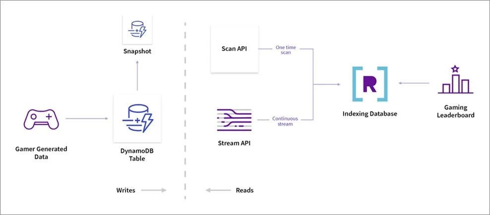
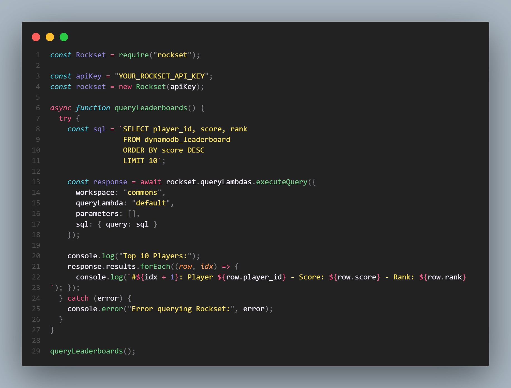
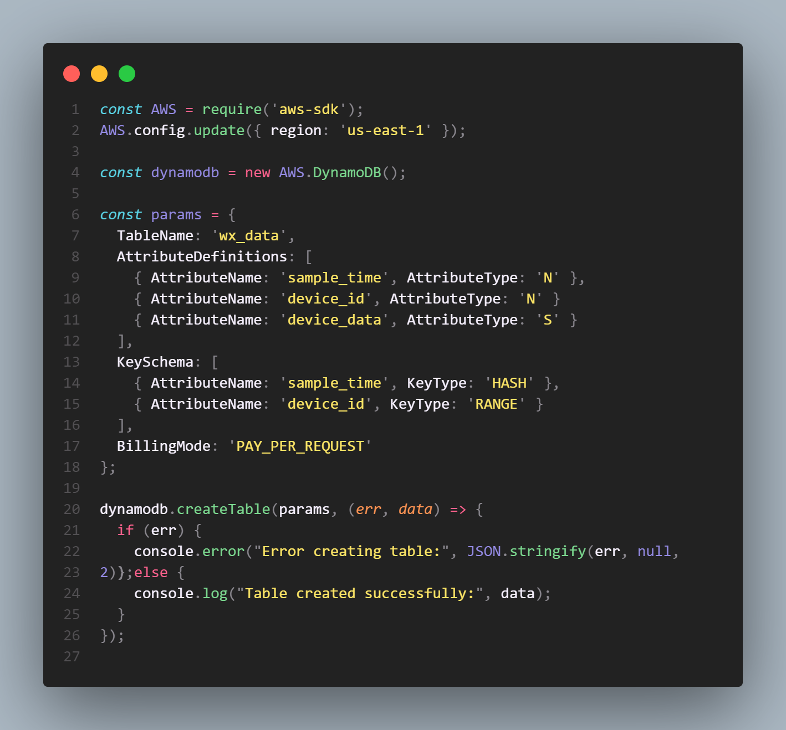
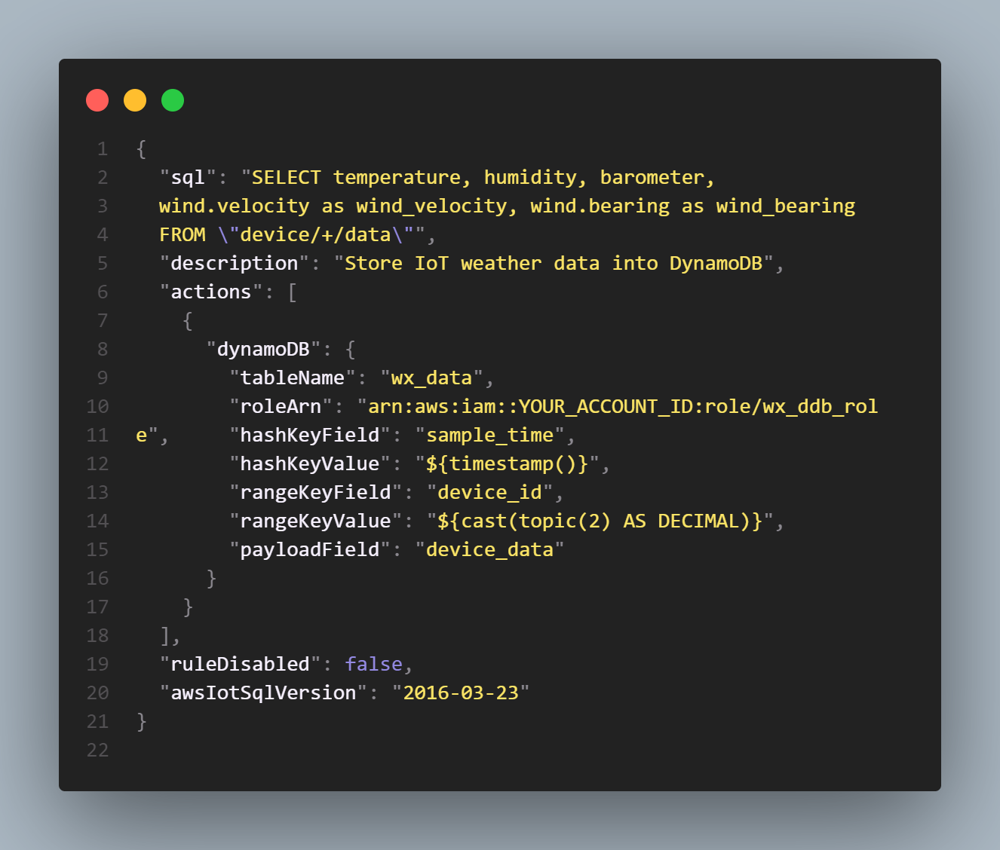
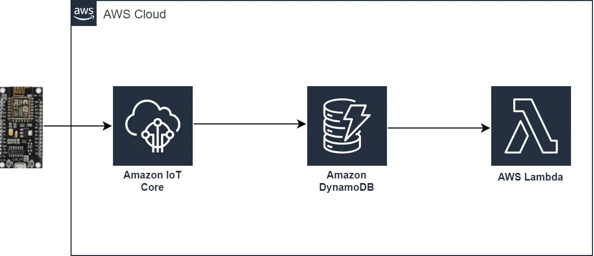

Architecture of DynamoDB

DynamoDB Distribution Architecture
In DynamoDB, tables, items, and attributes are the core components you work with. A table is a collection of items, and each item is a collection of attributes.
DynamoDB Table Structure

A DynamoDB table is divided into multiple partitions. This provides two benefits:
- Handling more throughput as requests increase.
- Storing more data as the table grows.
Each partition of the table hosts a part of the table’s key range. For example, if there are 100 keys and 5 partitions, each partition can hold 20 keys.
Table Partition Overview
Each partition has multiple replicas distributed across availability zones. Together, these replicas form a replication group, improving the partition’s availability and durability.
Replication Group and Multi-AZ Distribution for Data
A replication group consists of:
- The write-ahead logs
- B-tree that stores the key-value data
Additionally, a group can contain replicas that only store write-ahead log entries and not the key-value data. These are called log replicas.
Consensus and Multi-Paxos
Whenever you replicate data across multiple nodes, guaranteeing consensus becomes a challenge. What if each partition has a different value for a particular key?
The replication group uses Multi-Paxos for consensus and leader election.
Multi-Paxos Consensus Flow
The leader is a key player within the replication group:
- The leader serves all write requests. On receiving a write request, the leader generates a write-ahead log record and sends it to the other replicas.
- A write is acknowledged to the application once a quorum of replicas stores the log record to their local write-ahead logs.
- The leader also serves strongly consistent read requests, while any replica can serve eventually consistent reads.
If the leader goes down, it maintains its leadership using a lease mechanism. If this lease fails and another replica detects the failure, it can propose a new election round to become the new leader.
How AWS Manages DynamoDB
AWS manages the operational aspects of DynamoDB, including hardware provisioning, software patching, replication, failure detection, and recovery, enabling developers to focus on application logic rather than database management.
Key Features:
- Low Latency at Scale: Consistent single-digit millisecond latency even at massive scale.
- Fully Managed & Serverless: No servers to provision or manage, and DynamoDB scales automatically.
- Event-Driven Integration: DynamoDB Streams enable real-time triggers for workflows with AWS Lambda.
- Fine-Grained Security: Integrates with IAM, supports encryption, and network isolation via VPC endpoints.
- Flexible Data Model: Supports key-value and document data models.
- Global Tables: Multi-region replication for disaster recovery and low-latency global access.
DynamoDB is ideal for applications requiring massive scale, low latency, and flexible data models, such as gaming, IoT, mobile apps, and real-time bidding platforms.
Business Use Cases for DynamoDB
1. Gaming Applications

🚀 Real-Time Leaderboards with DynamoDB + Rockset
🔹 Why Use DynamoDB?
- Serverless NoSQL database designed for massive write throughput.
- Used to store real-time gameplay data like player scores, match stats.
- Scales automatically to handle millions of write requests per second.
🔹 Why Add Rockset?
- Rockset connects via DynamoDB Streams and syncs data in real-time.
- Indexes all ingested data for low-latency search, filtering, and joins.
- Supports full SQL on semi-structured DynamoDB data — no schema setup required.
- Ideal for building leaderboards, analytics dashboards, and real-time alerts.
🔹 How It Works
Player data is written to DynamoDB → DynamoDB Streams capture changes → Rockset ingests and indexes updates within 1 second → Developers query the data using SQL for instant results.
🔹 A sample code snippet for retriving top 10 Players from leaderboard

🔹 Benefits
- No need for complex ETL or data pipelines.
- Scalable, serverless setup — no infrastructure to manage.
- Supports dynamic analytics as game logic or ranking criteria evolve.
2. IoT and Telemetry
DynamoDB Table Setup for IoT Data

A DynamoDB table named wx_data is created to store data from IoT devices.
The table uses a composite primary key consisting of sample_time (partition key) and device_id (sort key).
The sample_time represents the timestamp when the data was recorded, while device_id uniquely identifies the device sending the data.
This structure allows efficient storage and retrieval of time-series data from multiple devices.
Sensor readings and other device information are stored under the attribute device_data, which holds the flattened JSON data from each device.
AWS IoT Rule for Data Ingestion

An AWS IoT rule is configured to listen for MQTT messages published on topics matching device/+/data.
The plus symbol (+) is a wildcard that captures data from all devices.
The rule extracts sensor data fields from the message payload and uses substitution templates to assign sample_time from the current timestamp and device_id parsed from the MQTT topic.
This processed data is then inserted into the DynamoDB table in real time, using an IAM role with appropriate permissions for secure access.
Data Flow and Benefits

IoT devices publish sensor data continuously, which is captured and transformed by AWS IoT before being stored in DynamoDB.
This serverless architecture scales automatically to handle millions of messages without infrastructure management, enabling real-time analytics and monitoring.